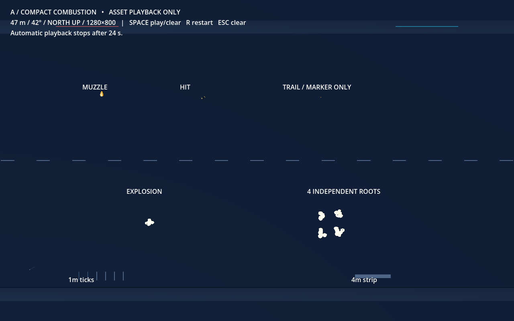
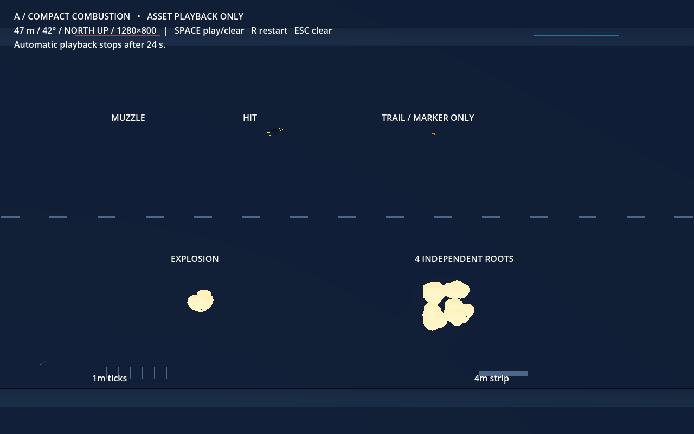
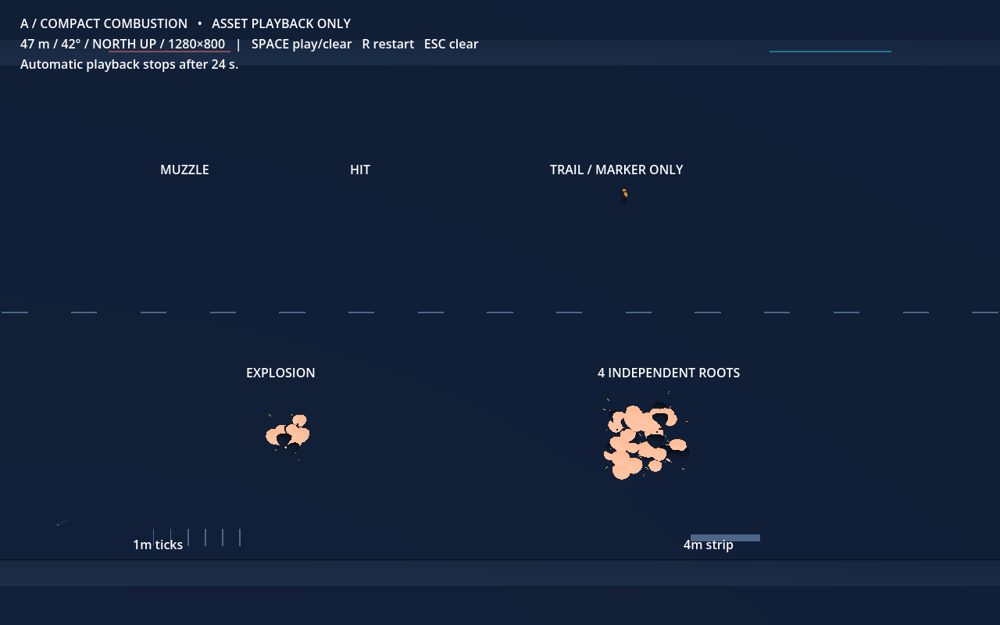
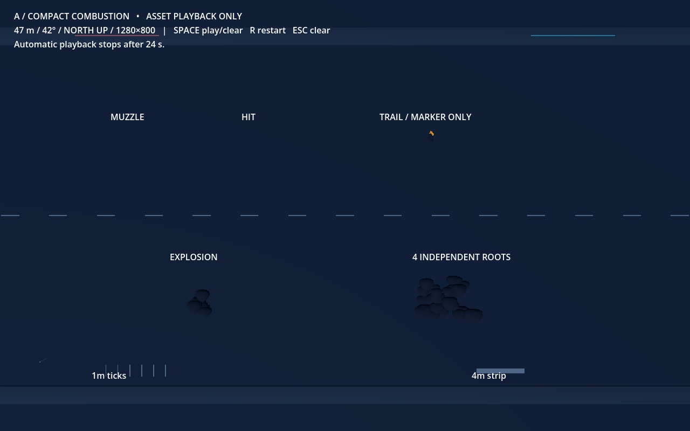
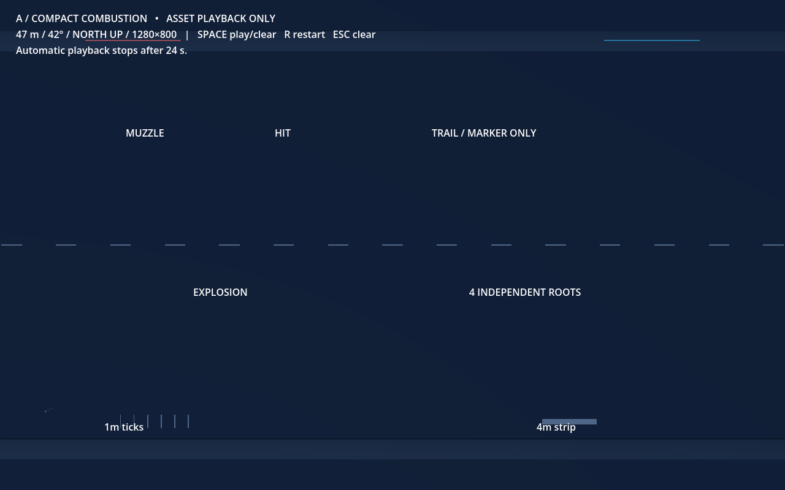

A / Compact combustion
First saved Godot asset revision. B remains available for later comparison.
Actual 1280×800 captures: camera 47 m above the stage, vertically down, north up, perspective 42°. Forward+/Vulkan on GTX 1070, 60 FPS cap/VSync. No model scaling or camera zoom for these images.
Concept options · Integrator handoff

Sequence playback is a review slideshow; timings below are the captured simulation ages, not an encoded video. Effects use independent particle randomness.
Ignite · actual age 0.017 sPeak · actual age 0.137 s
Break · actual age 0.338 s
Smoke · actual age 0.731 s
Settle · actual age 1.397 s
Clear · actual age 1.698 s
Self-review: muzzle has a brief ivory core; impact is deliberately small; the stationary tail marker produces a short warm stream; explosion lobes open into visible gaps and settle as dark smoke. The four-root example checks local overlap only. Equipped weapons, moving projectile residue, city target occlusion, network delivery and performance remain pending.